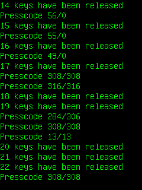

This example application catches key events and displays the keycodes of pressed keys.

This example is included in the MoSync SDK installation in the /examples folder. For information on importing the examples into your workspace, see Importing the Examples.
The screen says "Hello moblet!", after which the application awaits key presses. Each key (except the zero or right-softkey) will have its key codes (presscodes) echoed on-screen:
The application also keeps count of the number of keys that have been pressed and released. Key combinations, such as SHIFT-A, will have two or more consecutive presscodes and releases as shown in the example screen above.
There is no touchscreen support in this example, it just works with the physical keys of the device.